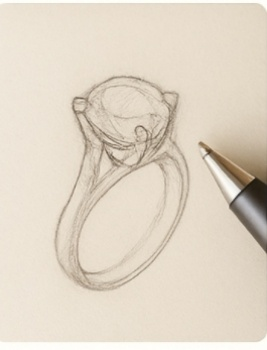
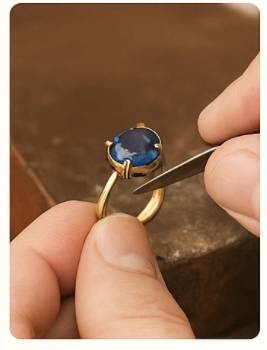

Custom Process
A clearer way to turn your idea into a finished custom piece. From inspiration images and gemstone preferences to production and delivery, each step is guided with thoughtful communication and realistic expectations.

1. Share Your Idea
Send your inspiration images, sketches, story, preferred gemstone, metal choice, budget range, or timeline. If you are not sure yet, that is completely fine. Many clients begin with only a rough idea, and I help shape it into a practical direction.

2. Confirm Design Direction
After reviewing your idea, we discuss the overall direction, suitable materials, and practical design considerations. Once the main details are clear, you receive a quote based on design complexity, materials, and production requirements.
A 30–50% deposit is usually required to begin the project.

3. Production & Updates
Once the design direction is confirmed and the deposit is received, production begins through our Guangzhou-based studio and workshop network. Depending on the project, this may include stone sourcing, wax carving, casting, setting, polishing, and finishing.
Typical production time is around 7–15 business days, depending on complexity and material availability.

4. Final Review & Delivery
Before shipping, final photos or videos are shared for review when needed. The remaining balance is paid before dispatch, and the piece is then shipped with international delivery support.
Insured shipping is available for most destinations.

Guided through a trusted Guangzhou-based studio and workshop network, each piece moves from idea to practical execution with clarity and care.
What Clients Usually Ask
Do I need a full design before contacting you?
No. A saved image, a sketch, a gemstone idea, or even a short description is enough to begin.
Can you help me choose stone and metal options?
Yes. Guidance is available on gemstones, metals, proportions, and practical details based on design, wearability, and budget.
How long does a custom piece usually take?
Most projects take around 7–15 business days after design direction and deposit are confirmed. More complex projects may take longer.
Will I receive updates during the process?
Yes. Communication is kept clear throughout the project, especially when key decisions or confirmations are needed.
Do you ship internationally?
Yes. International delivery is available, with insured shipping options for most destinations.
What Helps a Project Move Smoothly
The clearest projects usually begin with a few useful details: reference images, a budget range, size information, timeline, and openness to practical design guidance.